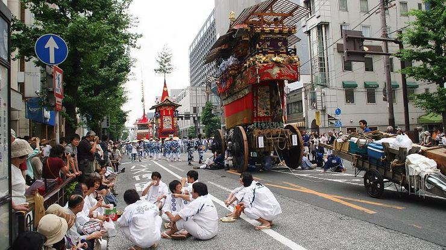

Gion Matsuri – July
The Gion Festival (祇園祭, Gion Matsuri) is one of the largest and most famous festivals in Japan, taking place annually during the month of July in Kyoto.[1] Many events take place in central Kyoto and at the Yasaka Shrine, the festival's patron shrine, located in Kyoto's famous Gion district, which gives the festival its name.[1] It is formally a Shinto festival, and its original purposes were purification and pacification of disease-causing entities.[2] There are many ceremonies held during the festival, but it is best known for its two Yamaboko Junkō (山鉾巡行) processions of floats, which take place on July 17 and 24.[3]
The three nights leading up to each day of a procession are sequentially called yoiyoiyoiyama (宵々々山), yoiyoiyama (宵々山), and yoiyama (宵山). During these yoiyama evenings, Kyoto's downtown area is reserved for pedestrian traffic, and some traditional private houses near the floats open their entryways to the public, exhibiting family heirlooms in a custom known as the Folding Screen Festival (屏風祭り, Byōbu Matsuri). Additionally, the streets are lined with night stalls selling food such as yakitori (barbecued chicken on skewers), taiyaki, takoyaki (fried octopus balls), okonomiyaki, traditional Japanese sweets, and many other culinary delights.

